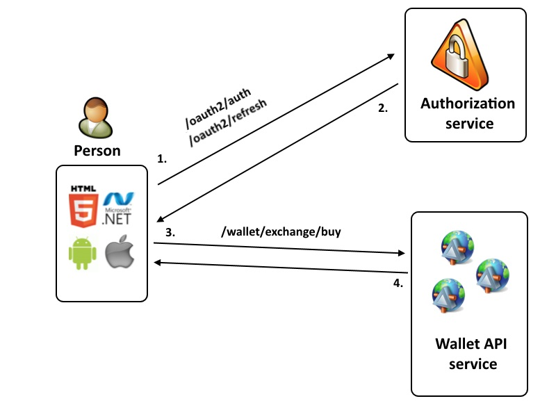

Story Time
"Bitcoin is the new cool thing," Ian said before showing me his investments and made sure to iterate how much he made in the past 24 hours. "It's like the stock market, but much juicier," he asserted as he brought his hand to a fist as if he was desperately squeezing a lemon.
Ian got word about cryptocurrency from a friend of his. They were ex-stock investors, and they were pretty successful. He portfolio consisted of Apple and Facebook stock. They called themselves fundamental investors, meaning they read the balance sheets and income statements. They wouldn't invest in a company if it wasn't making a heap of revenue annually. So you must understand I was really shook when I heard Ian bought Bitcoin.
Fundamental trading is a method by which a trader focuses on company-specific events to determine which stock to buy and when to buy it. Trading on fundamentals is more closely associated with the buy-and-hold strategy of investing than with short-term trading.
A little about Crypto
The first cryptocurrency was created by Satoshi Nakamoto in 2009 and was given the name bitcoin. It first started off as a form of payment for many dark web transactions where the parties didn't want to be tracked. It provided a masking filter that made it difficult for law enforcement to do any tracking. It was mainly used for that purpose, but the blockchain technology was revolutionary in the tech industry, and everyone wanted in on it. Thus began the trading of Bitcoin.
 “The swarm is headed towards us” – Satoshi NakamotoMy role in the world of Crypto
People began buying crypto like candy and I wanted in. I initiated by scraping all data from the Cryptopia Exchange and appending it to an SQL database that I created. I collected data on the current price, volume, label, buy volume and sell volume, adding to it every 8 seconds. I then grouped them according to their ticker. Then I ran a model that would check for the best coin to buy immediately by taking into consideration the data I collected from the database.
I also automated the ICO whitepapers. ICO stands for Initial Coin Offering. It's when a coin begins distribution and allows people of the public to buy in. Before the ICO phase, the company distributes tokens that can later be redeemed for more money if the company profits after the ICO phase. A Recent study on Initial Coin Offerings (ICOs) found that the average ICO investor sees returns of 82 percent, according to report published by the Boston College Carroll School of Management. Many coins immediately skyrocket, and I wanted to ride it. I trained a model on previous whitepapers and their ICOs. The end model was able to pick up successful ICOs 95% of the time with an average coin giving a return of over 250%.